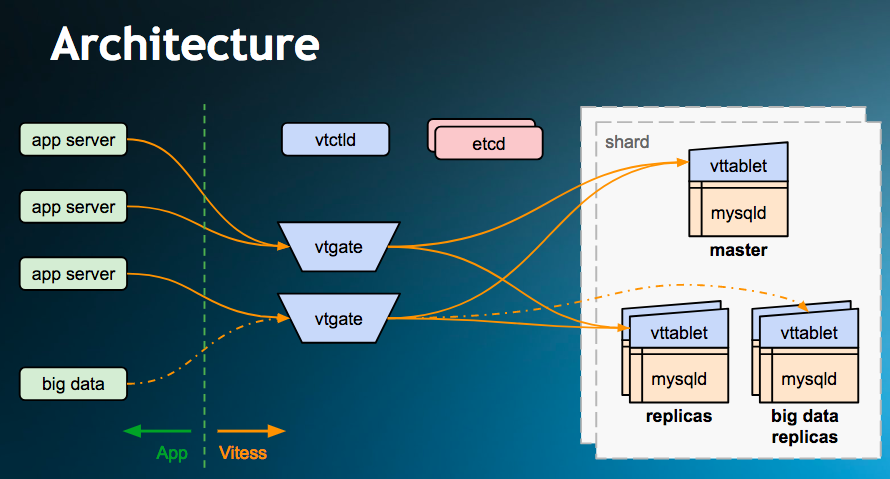

- 00 为什么我们要学习 Kubernetes 技术.md.html
- 01 重新认识 Kubernetes 的核心组件.md.html
- 02 深入理解 Kubernets 的编排对象.md.html
- 03 DevOps 场景下落地 K8s 的困难分析.md.html
- 04 微服务应用场景下落地 K8s 的困难分析.md.html
- 05 解决 K8s 落地难题的方法论提炼.md.html
- 06 练习篇：K8s 核心实践知识掌握.md.html
- 07 容器引擎 containerd 落地实践.md.html
- 08 K8s 集群安装工具 kubeadm 的落地实践.md.html
- 09 南北向流量组件 IPVS 的落地实践.md.html
- 10 东西向流量组件 Calico 的落地实践.md.html
- 11 服务发现 DNS 的落地实践.md.html
- 12 练习篇：K8s 集群配置测验.md.html
- 13 理解对方暴露服务的对象 Ingress 和 Service.md.html
- 14 应用网关 OpenResty 对接 K8s 实践.md.html
- 15 Service 层引流技术实践.md.html
- 16 Cilium 容器网络的落地实践.md.html
- 17 应用流量的优雅无损切换实践.md.html
- 18 练习篇：应用流量无损切换技术测验.md.html
- 19 使用 Rook 构建生产可用存储环境实践.md.html
- 20 有状态应用的默认特性落地分析.md.html
- 21 案例：分布式 MySQL 集群工具 Vitess 实践分析.md.html
- 22 存储对象 PV、PVC、Storage Classes 的管理落地实践.md.html
- 23 K8s 集群中存储对象灾备的落地实践.md.html
- 24 练习篇：K8s 集群配置测验.md.html
- 捐赠
21 案例：分布式 MySQL 集群工具 Vitess 实践分析
对于 Kubernetes 的有状态应用部署来说，当然最有挑战的例子就是拿 MySQL 集群部署最为经典。在近 10 年的数据库流行度来讲，每一个开发者接触到最多的就是 MySQL 数据库了。几乎人人都知道 MySQL Master/Slave 方式的集群搭建方式，其架构的复杂度可想而知。当我们技术把 MySQL 集群搭建到 Kubernetes 集群的时候就不得不考虑如何利用云原生特性把集群搭建起来。这里笔者并不想去分析如何徒手分解安装 MySQL 集群的 YAML，而是通过有过成功迁移云原生集群工具 Vitess 来总结真实的实践过程。
Vitess 工具介绍
Vitess 号称可以水平扩展 MySQL 数据库集群管理工具。最早被我们熟知的新闻就是京东在 618 大促中全面采用云原生技术，其中数据库分片集群管理这块就是采用的 Vitess。接下来我们首先快速体验一下在 Kubernetes 下使用 Vitess 的过程。
初始化环境
采用单机部署，在 AWS 上启动一台内存大于 8G 的虚拟机，通过安装 K3s 快速构建一套 Kubernetes 环境。
# 初始化 Kubernetes 单机集群
curl https://releases.rancher.com/install-docker/19.03.sh | sh
curl -sfL https://get.k3s.io | sh -
# 下载 kubectl
curl -LO https://storage.googleapis.com/kubernetes-release/release/v1.14.9/bin/linux/amd64/kubectl
# 安装 MySQL 客户端
apt install mysql-client
# 下载安装客户端 vtctlclient 最新版本：
wget https://github.com/vitessio/vitess/releases/download/v8.0.0/vitess-8.0.0-7e09d0c.tar.gz
tar zxvf vitess-8.0.0-7e09d0c.tar.gz && cp vitess-8.0.0-7e09d0c/bin/vtctlclient /usr/local/bin/
# 下载 vitess operator 例子
git clone https://github.com/vitessio/vitess.git
cd vitess/examples/operator
k3s kubectl apply -f operator.yaml
root@ip-172-31-27-203:~/vitess/examples/operator# k3s kubectl get po
NAME READY STATUS RESTARTS AGE
vitess-operator-784458658c-mzhzx 1/1 Running 0 59s
# 初始化集群
root@ip-172-31-27-203:~/vitess/examples/operator# k3s kubectl apply -f 101_initial_cluster.yaml
vitesscluster.planetscale.com/example created
secret/example-cluster-config created
root@ip-172-31-27-203:~/vitess/examples/operator# k3s kubectl get pods
NAME READY STATUS RESTARTS AGE
vitess-operator-784458658c-mzhzx 1/1 Running 0 3m38s
example-etcd-faf13de3-2 1/1 Running 0 111s
example-etcd-faf13de3-1 1/1 Running 0 111s
example-etcd-faf13de3-3 1/1 Running 0 111s
example-zone1-vtctld-1d4dcad0-68484d7b88-428dc 1/1 Running 2 111s
example-zone1-vtgate-bc6cde92-c6499cf87-w86rz 1/1 Running 2 111s
example-vttablet-zone1-2469782763-bfadd780 3/3 Running 2 111s
example-vttablet-zone1-2548885007-46a852d0 3/3 Running 2 111s
为了方便连接 Vitess 这个 proxy，需要初始化一下端口转发的环境：
./pf.sh &
alias vtctlclient="vtctlclient -server=localhost:15999"
alias mysql="mysql -h 127.0.0.1 -P 15306 -u user"
加载数据库表结构：
vtctlclient ApplySchema -sql="$(cat create_commerce_schema.sql)" commerce
vtctlclient ApplyVSchema -vschema="$(cat vschema_commerce_initial.json)" commerce
通过 MySQL 连接 Vitess Proxy 访问 MySQL Server：
~/vitess/examples/operator$ mysql
Welcome to the MySQL monitor. Commands end with ; or \g.
Your MySQL connection id is 3
Server version: 5.7.9-Vitess MySQL Community Server (GPL)
Copyright (c) 2000, 2020, Oracle and/or its affiliates. All rights reserved.
Oracle is a registered trademark of Oracle Corporation and/or its
affiliates. Other names may be trademarks of their respective
owners.
Type 'help;' or '\h' for help. Type '\c' to clear the current input statement.
mysql> show databases;
+-----------+
| Databases |
+-----------+
| commerce |
+-----------+
1 row in set (0.00 sec)
至此，我们的体验和安装一套本地的 MySQL Server 是一样的。这种透明的体验值得我们接下来持续挖掘更高级的特性。
下图说明了 Vitess 的组件架构，我们需要熟悉这些术语：

Topology
拓扑服务是一个元数据存储对象，包含有关正在运行的服务器、分片方案和复制关系图的信息。拓扑由一致性的数据存储支持，默认支持 etcd2 插件。您可以使用 vtctl（命令行）和 vtctld（web）查看拓扑信息。
VTGate
VTGate 是一个轻型代理服务器，它将流量路由到正确的 VTTablet，并将合并的结果返回给客户端。应用程序向 VTGate 发起查询。客户端使用起来非常简单，它只需要能够找到 VTGate 实例就能使 Vitess。
VTTablet
VTTablet 是一个位于 MySQL 数据库前面的代理服务器，执行的任务试图最大化吞吐量，同时保护 MySQL 不受有害查询的影响。它的特性包括连接池、查询重写和重用重复数据。
Keyspace
关键空间是一个逻辑数据库。如果使用 Sharding，一个 keyspace 映射到多个 MySQL 数据库；如果不使用 Sharding，一个 keyspace 直接映射到一个 MySQL 数据库名。无论哪种情况，从应用程序的角度来看，一个关键空间都是作为一个单一的数据库出现的。
从一个关键空间读取数据就像从 MySQL 数据库读取数据一样。然而，根据读取操作的一致性要求，Vitess 可能会从主数据库或副本中获取数据。通过将每个查询路由到适当的数据库，Vitess 允许你的代码结构化，就像从一个 MySQL 数据库中读取一样。
Vitess 高级特性介绍
Sharding 是一种水平分区数据库的方法，用于在两个或多个数据库服务器上存储数据。下面我们讲解 Vitess 中的 Sharding 如何工作以及 Vitess 支持的 Sharding 类型。
Vitess 中的 keyspace 可以是分片的，也可以是非碎片化的，非分片化的 keyspace 可以直接映射到 MySQL 数据库。如果是分片的，keyspace 的行被分割到相同模式的不同数据库中。
例如，如果一个应用程序的 “User” keyspace 被分割成两个分片，那么每个分片包含了该应用程序大约一半用户的记录。同样，每个用户的信息也只存储在一个 Shard 中。
请注意，Sharding 与（MySQL）复制是正交的。一个 Vitess Shard 通常包含一个 MySQL 主程序和许多 MySQL 副本。主程序处理写操作，而副本则处理只读流量、批处理操作和其他任务。除了一些复制滞后外，Shard 内的每个 MySQL 实例都应该有相同的数据。
| 需求 | 动作 |
|---|---|
| 统一增加读容量 | 增加副本或分片 |
| 统一增加写容量 | 分片 shards |
| 回收过剩的资源 | 合并 shards 或 keyspaces |
| 增加地理多样性 | 增加新的分区和副本 |
| 热表处理 | 对于只读热表，多加副本或分片；对于写表，直接分片 |
应用新的 VSchema 会指示 Vitess 键空间是分片的，这可能会阻止一些复杂的查询。在进行这一步之前，最好先验证一下。如果你确实注意到某些查询开始失败，你总是可以通过恢复旧的 VSchema 来暂时恢复。确保在进入 Reshard 过程之前修复了所有的查询。
vtctlclient ApplySchema -sql="$(cat create_commerce_seq.sql)" commerce
vtctlclient ApplyVSchema -vschema="$(cat vschema_commerce_seq.json)" commerce
vtctlclient ApplySchema -sql="$(cat create_customer_sharded.sql)" customer
vtctlclient ApplyVSchema -vschema="$(cat vschema_customer_sharded.json)" customer
在这一点上，你已经最终确定了你的分片 VSchema，并审核了所有的查询，以确保它们仍然有效。现在是时候重新分片了。
重新 Sharding 的过程是通过将现有的 shard 分割成更小的 shard。这种类型的重新 Sharding 是最适合 Vitess 的。在某些情况下，您可能希望引入一个新的分片，并在最近创建的分片中添加新行。在 Vitess 中，可以通过拆分 Shard 的方式来实现这一点。
kubectl apply -f 302_new_shards.yaml
killall kubectl
./pf.sh &
# With Operator on Start the Reshard
vtctlclient Reshard customer.cust2cust '-' '-80,80-'
在 Reshard 完成后，我们可以使用 VDiff 来检查数据的完整性，确保我们的源和目标分片是一致的。
vtctlclient VDiff customer.cust2cust
# 返回如下内容
Summary for customer: {ProcessedRows:5 MatchingRows:5 MismatchedRows:0 ExtraRowsSource:0 ExtraRowsTarget:0}
Summary for corder: {ProcessedRows:5 MatchingRows:5 MismatchedRows:0 ExtraRowsSource:0 ExtraRowsTarget:0}
手工切换读、写操作到新分片。确保数据库正常执行：
vtctlclient SwitchReads -tablet_type=rdonly customer.cust2cust
vtctlclient SwitchReads -tablet_type=replica customer.cust2cust
vtctlclient SwitchWrites customer.cust2cust
mysql --table < ../common/select_customer-80_data.sql
Using customer/-80
Customer
+-------------+--------------------+
| customer_id | email |
+-------------+--------------------+
| 1 | [email protected] |
| 2 | [email protected] |
| 3 | [email protected] |
| 5 | [email protected] |
+-------------+--------------------+
COrder
+----------+-------------+----------+-------+
| order_id | customer_id | sku | price |
+----------+-------------+----------+-------+
| 1 | 1 | SKU-1001 | 100 |
| 2 | 2 | SKU-1002 | 30 |
| 3 | 3 | SKU-1002 | 30 |
| 5 | 5 | SKU-1002 | 30 |
+----------+-------------+----------+-------+
mysql --table < ../common/select_customer80-_data.sql
Using customer/80-
Customer
+-------------+----------------+
| customer_id | email |
+-------------+----------------+
| 4 | [email protected] |
+-------------+----------------+
COrder
+----------+-------------+----------+-------+
| order_id | customer_id | sku | price |
+----------+-------------+----------+-------+
| 4 | 4 | SKU-1002 | 30 |
+----------+-------------+----------+-------+
总结
应用 Vitess Operator 之后，收获最大的就是完全不用操心 MySQL 复制集群的架构设计，由 Vitess Operator 来管理高可用和数据库的分片，把复杂的分布式部署的运维问题屏蔽了一大半。当然，作为运维人员需要注意的是，因为 Vitess 是一个 Proxy，它和 MySQL 原生接口的协议还是有一些不一样的地方，需要适配。因为京东在 618 大促中采用了 Vitess 技术来支撑数据库集群，让我们可以放心大胆地使用它。
参考资料
© 2019 - 2023 Liangliang Lee. Powered by gin and hexo-theme-book.